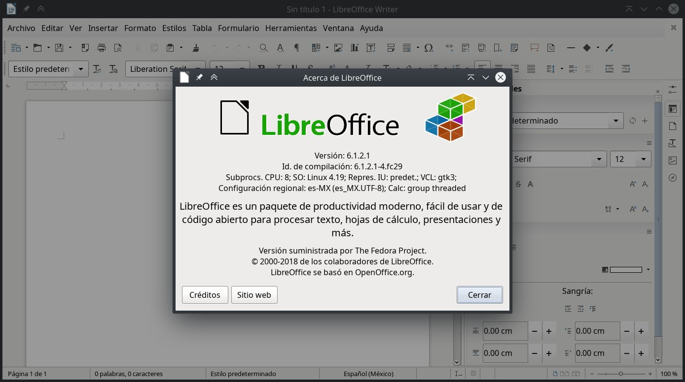
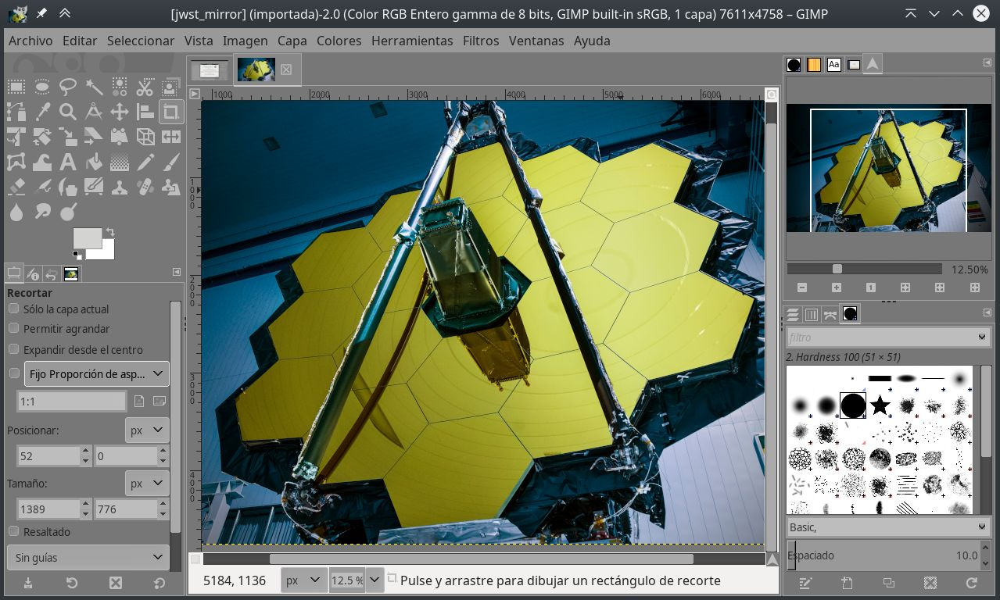
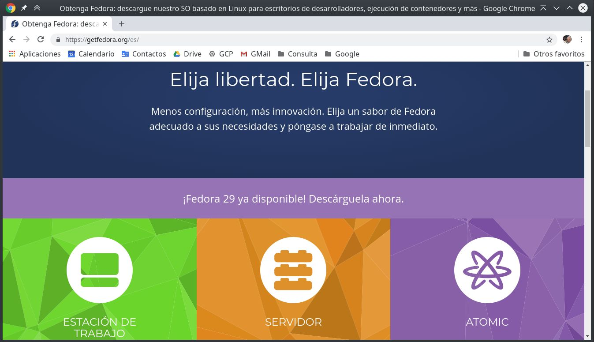
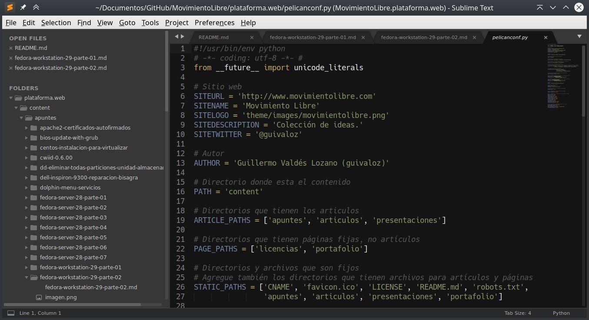
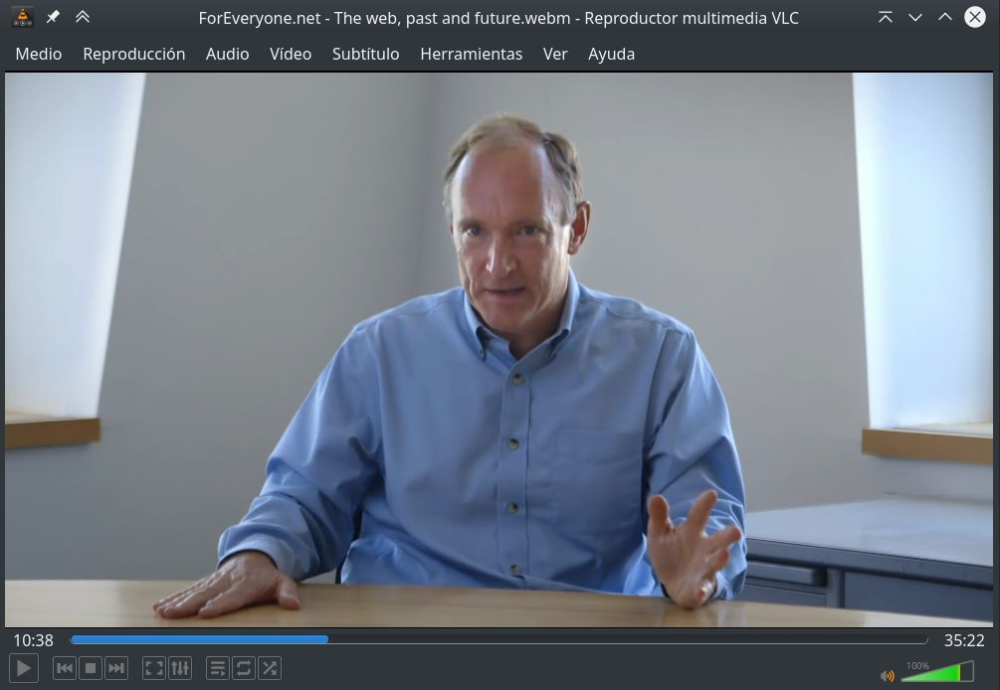

Instalación de Fedora Workstation 29, parte 2
Listo los comandos de instalación del software (preferido por el autor) en Fedora Linux 29 con KDE.
05 January 2019
En este apunte sencillamente listo los comandos que irán instalando el software de mi elección personal. Luego de instalar Fedora Workstation con KDE. Primero hacemos una actualización...
# dnf upgrade
Y reiniciamos...
# systemctl reboot

Instale LibreOffice y los programas cliente para PostgreSQL...
# dnf group install --with-optional LibreOffice
# dnf install libreoffice-help-es libreoffice-langpack-es
# dnf install libreoffice-postgresql
# dnf install postgresql
Instale LaTeX...
# dnf search texlive-scheme
# dnf install texlive-scheme-tetex
# dnf install texlive-collection-latexextra
# dnf install texlive-collection-pstricks
# dnf install texlive-babel-spanish texlive-babel-spanish-doc texlive-hyphen-spanish
# dnf install texlive-babel-english texlive-babel-english-doc texlive-hyphen-english
# fmtutil --all -sys
Instale Python...
# dnf group install --with-optional "Python Classroom"
# dnf group install --with-optional "Python Science"
Instale utilerías diversas...
# dnf install system-storage-manager
# dnf install pwgen
# dnf install youtube-dl
# dnf install hwinfo
Instale software de KDE...
# dnf install kate
# dnf install filelight
# dnf install umbrello
# dnf install krename
Instale soporte para impresoras HP...
# dnf install hplip

Instale GIMP...
# dnf install gimp
Instale Inkscape...
# dnf install inkscape
Instale temas de decoración de ventanas de GTK...
# dnf install clearlooks-phenix-gtk2-theme clearlooks-phenix-gtk3-theme
Instale tipografías...
# dnf install liberation-fonts
# dnf install bitstream-vera-sans-fonts bitstream-vera-serif-fonts bitstream-vera-sans-mono-fonts
# dnf install terminus-fonts
Instale el lector y convertidor de libros electrónicos Calibre...
# dnf install calibre
Prepare los repositorios adicionales...
# dnf install fedora-workstation-repositories
# dnf repolist --all

Instale Google Chrome y sus tipografías...
# dnf config-manager --set-enabled google-chrome
# dnf update
# dnf install google-chrome-stable
# dnf install google-noto-sans-fonts google-noto-serif-fonts google-noto-mono-fonts
# dnf install google-droid-sans-fonts google-droid-serif-fonts google-droid-sans-mono-fonts
# dnf install google-roboto-fonts google-roboto-mono-fonts google-roboto-condensed-fonts
Configure los repositorios RPM Fusion...
# dnf install https://download1.rpmfusion.org/free/fedora/rpmfusion-free-release-$(rpm -E %fedora).noarch.rpm \
https://download1.rpmfusion.org/nonfree/fedora/rpmfusion-nonfree-release-$(rpm -E %fedora).noarch.rpm
# dnf update
Para mi equipo, requiero el controlador anterior y binario NVIDIA...
# dnf search nvidia-390
# dnf install xorg-x11-drv-nvidia-390xx akmod-nvidia-390xx
# nano /etc/X11/xorg.conf.d/00-monitor.conf
# systemctl reboot
Instale más programas de RPM Fusion...
# dnf install fuse-exfat exfat-utils
# dnf install ffmpeg ffmpegthumbs
# dnf install mplayer mencoder
# dnf install audacity-freeworld
# dnf install k3b-extras-freeworld
# dnf install kdenlive frei0r-plugins
# dnf install moc
# dnf groupupdate Multimedia
Para usar contenedores, instale Docker, después configure...
# dnf install docker
# dnf install docker-compose

Instale Sublime Text a partir de su propio repositorio...
# rpm -v --import https://download.sublimetext.com/sublimehq-rpm-pub.gpg
# dnf config-manager --add-repo https://download.sublimetext.com/rpm/stable/x86_64/sublime-text.repo
# dnf update
# dnf install sublime-text
Instale Libvirtd...
# dnf group install 'Virtualización' --with-optional
Instale Steam, a partir de RPM Fusion...
# dnf config-manager --set-enabled rpmfusion-nonfree-steam
# dnf install steam

Instale VLC, con complementos desde RPM Fusion...
# dnf install vlc